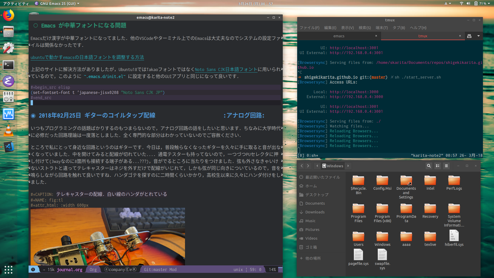

KARITECH
目次
- 2018年08月25日 D言語のヤバい規格：with文が予想以上に強い D
- 2018年05月28日 D言語のコーディングスタイル (抄訳) D
- 2018年05月19日 D言語で GEMM を高速化する D
- 2018年03月25日 Ubuntu 18.04 LTS (beta) のセットアップ Linux
- 2018年02月25日 ギターのコイルタップ配線 アナログ回路
- 2018年02月25日 幾何平均・総乗の計算の小技 D
- 2018年02月24日 D言語でnumpyっぽいコードを書く D
- 2018年01月16日 C++でネストした要素型の取得 :cpp: D
- 2018年01月02日 おけましておめでとうございます. emacs
Log(ja)
2018年08月25日 D言語のヤバい規格：with文が予想以上に強い D
最近 grain を書いていて，オーバーロードやUFCSを駆使して重箱の隅をつついてしまったので，一度関数呼び出しの探索について整理してみようと思いました．
言語規格
- 後方参照のあるD言語ではimport順は影響しない https://docarchives.dlang.io/v2.081.0/spec/module.html
- オーバーロード解決のルール https://docarchives.dlang.io/v2.081.0/spec/function.html#partial-ordering
- UFCS解決のルール https://docarchives.dlang.io/v2.081.0/spec/function.html#pseudo-member
- with 文 https://docarchives.dlang.io/v2.081.0/spec/statement.html#with-statement
動作確認例
ちょっとややこしいのですが，我慢してください
module a; string f(T)(T) { return "a"; } auto f()(string) { // string に特殊化 return "a"; }
module b; auto f(T)(T) if (!is(T : string)) { // string 以外の型に制約 return "b"; }
module c; struct C(T) { static f() { return "c"; } }
import a; import b; import c; import std.stdio; void main() { // 多くの引数ではaとbが競合するのでコンパイルできない { // 0.f; // error } // 特殊化された引数型で解決可能な関数がaのみにあれば、限定される { assert("hi".f == "a"); } // メソッドは常に優先される { C!int c; assert(c.f == "c"); } // より近いスコープにimportされていれば優先される { import a; assert(1.f == "a"); } { import b; assert(2.f == "b"); } // より近いwith文が優先される { with (a) { assert(3.f == "a"); with (b) { assert(4.f == "b"); { import a; assert(5.f == "b"); // "a"ではなく? // assert("hi".f == "a"); // a でなく b が優先されるので解決できずコンパイルエラー C!int c; assert(c.f == "c"); // さすがにメソッドの書き換えはしない } } } } // モジュールを明示すれば限定される。UFCSは使えない { assert(a.f(6) == "a"); assert(b.f(7) == "b"); } }
本題：with文が強すぎる
冒頭に挙げた言語規格のうち，競合というか微妙になる箇所があります．
> UFCS書き換えは最も近い順のスコープから探索する
19.26.5 When UFCS rewrite is necessary, compiler searches the name on accessible module level scope, in order from the innermost scope. https://docarchives.dlang.io/v2.081.0/spec/function.html#pseudo-member
> with (symbol) { body } の body で参照されたオブジェクトは symbol を第一に探索する
11.19.1 Within the with body the referenced object is searched first for identifier symbols. https://docarchives.dlang.io/v2.081.0/spec/statement.html#with-statement
ここで生じる疑問は with (b) { { import a; 5.f; } } のようなコードは a.f, b.f どちらの関数が呼ばれるのかというところです．
- 当初の予想： aに解決可能なシンボルfがあるか探し，なければbに解決可能なシンボルがあるか探し，さらに外側のスコープを探す．
- 実際の動作 (dmd 2.082.0) ： bに解決可能なシンボルfがあるか探し，なければコンパイルエラーにする
何も直感に沿っていなかったです．bが優先されることは「11.19.1 が 19.26.5 より強い」とどこかに書かれていれば納得できるのですが，コンパイルエラーになるのは19.26.5に違反していますし，例外的にコンパイルエラーとする条件が複雑になるのでやめてほしいです．今日明日にでもD言語フォーラムにでも投げてみようかと思います．
ちなみに，このwith文の動作はWandboxで確認できるバージョンだと dmd2.069.2-dmd2.073.0から発生したようです (5.fが a なのか b なのかが異なる．"hi".f のコンパイルエラーは共通)．ちなみにfrontendの動作っぽいのでgdc9.0.0やLDC1.11.0でも再現します．DMDのテストケースをgrepした感じだと，この手の挙動の回帰テストはなさそうだったので，もしかするとバグ?
追記
とりあえずフォーラムに投げました https://forum.dlang.org/thread/nsrlypfsaaoafdzvdiiv@forum.dlang.org
2018年05月28日 D言語のコーディングスタイル (抄訳) D
私がD言語で一番好きなところは，標準ライブラリやランタイムが結構読みやすいことです． 残念ながら，あまり日本語の記事で解説がないので(これがD言語の唯一の欠点)，公式の英語ドキュメントを紹介したいと思います．
公式のドキュメント
おしゃれなD言語くん が出迎えてくれるD言語公式のスタイルを説明したページです．D言語始めたばかりの人はぜひ一読ください． そこそこ長いので，常識的な部分を除いたD言語固有の部分を抜粋してまとめました．
D言語全般の推奨事項
- 字下げはタブではなく4スペースで行う
- 命名規則：クラス/構造体/インタフェースは PascalCase を使う．モジュールは全て小文字．それ以外の識別子(変数/関数など)は camelCase を使う．aliasやtemplateは使い方次第
- 関数: property が使えるところは使う (getter/setterはさける)．関数名は動詞にすべきだが，propertyは名詞にする．
ドキュメント: public な関数は Ddoc 形式の少なくとも Params (引数) と Returns (返り値) が載ったドキュメントをつける
/** Checks whether a number is positive. `0` isn't considered as positive number. Params: number = number to be checked Returns: `true` if the number is positive, `0` otherwise. See_Also: $(LREF isNegative) */ bool isPositive(int number) { return number > 0; }
- 単体テスト: 出来る限り実用的に，全ての関数はすぐそばに unittest ブロックで動作例を示す．コードは網羅的に一度は検証しカバレッジ計測する
標準ライブラリ特有の事項(任意)
以下は，標準ライブラリ特有の部分です．好みの問題で，私はあまり従っていません．
- 中括弧またはブレース
{...}は1行にそれ単体で記述する (Allman style) - 不要な括弧 (例:
(a == b) ? "foo" : "bar") は避ける - 各行は80文字以下を推奨．いかなるときも120文字は超えてはいけない
- import 文:
- グローバルなimportは避け，ローカルなimportにすべき
- import 順は辞書順にソートすべき
- 返り値型は
auto等ではなく，可読性を高められる場合は明示すべき - 構造体を返すとき，public な構造体より，ネスト構造体を推奨
- 属性:
- 非テンプレート関数は属性 (@nogc, @safe, pure, nothrow) の適用可能なものは明記すべき
- テンプレート関数はコンパイラが推論するため，属性を明記すべきでは ない
- 複数の属性は@を除いたアルファベット順に記述すべき (例
const @nogc nothrow pure @safe) - 全ての unittest ブロックは属性を明記し，推論されたテンプレート関数の属性を保証すべき
- テンプレートの中に unittest を書いてはいけない．実体化のたびに重複して生成される．外に書くべき．
テンプレートの制約は字下げしてはいけない (制約の公式ページ は違反している?)
void foo(R)(R r) if (R == 1)
ドキュメント (DDoc)
- 全ての public なシンボルはドキュメント化すべき
- Params:, Returns:, See_Also: 中のテキストは1行に収まらない場合，一段字下げする
- ドキュメントの開始
/**や/++は2つ以上の+や*を使ってはいけない - ditto (同上) というドキュメント (
/// ditto) 以外は，一行コメントではなくブロックコメントを使う． - ドキュメントコメントで各行に*をつけてはいけない
/** * これは * 推奨されない */
- Examples セクションは3つのダッシュ
---のみを使う
/** 数の平方根を計算します。 ここには実際に与えられた数の平方根を 求める関数の社会的な価値について 細かく説明する長いパラグラフが入ります。 Example: --- double sq = sqrt(4); --- Params: number = 平方根を計算する数。 License: 任意の用途に自由に使ってください Throws: 何も投げません。 Returns: 入力の平方根。 */ T sqrt(T)(T number)
補足
とりあえず，コード書きながらツールを使って教えてもらうのが良いと思います．
- https://github.com/dlang-community/D-Scanner : Linterなどの機能が入ったCUIツール．色んなエディタと連携できる
- https://github.com/dlang-vscode/dlang-vscode : VS Codeで上記のツールを使うプラグイン．エディタの拡張機能から検索して，ほぼマウスでポチポチするだけなので一番導入が楽．デフォルトだとLinterうるさいです
今回は関係ないですが，補完関係だとDCD が便利です．
あとドキュメントの /** と /++ ってどっちが多いのかなと思い，標準ライブラリ Phobos を調べたところ
grep "/\*\*" phobos/**/*.d | wc -l: 3920grep "/++" phobos/**/*.d | wc -l: 788
という感じでした．
2018年05月19日 D言語で GEMM を高速化する D
TL;DR : MKL には勝てなかったが，OpenBLAS/GLASには割と勝てた．
準備
git clone https://github.com/ShigekiKarita/d-gemm
cd d-gemm
curl https://dlang.org/install.sh | bash -s ldc-1.7.0
sudo apt-get install libopenblas-dev
dub run --compiler=ldc2 --build=release-nobounds
比較対象の既製BLASとして dub.json の "libs": ["mkl_rt"] のときMKLを使い， "libs": ["openblas"] にすればOpenBLASを使う．また，かつてD言語最速を謳っていたmir-glasは放置気味で，LDC1.7.0以外ではリンカエラーがでるので，仕方なく一昔前のLDC1.7.0を使っている．過去の経験からMKLが圧倒的に速いということはわかるのだが，年に一度くらい思い出したようにGEMMを書きたくなる．
今更だが，GEMMとは \(C := \alpha A \times B + \beta C\) を計算するFORTRAN由来の関数である．とりあえずこの関数が速いと，色々な問題(連立方程式，ニューラルネットなど)が高速に計算できるので重要視されている．
mir/numir を使う
D言語の行列演算ライブラリといえば，とりあえずBLASが使える mir を使うのがおすすめです．さらに補助ライブラリ numir を使うことで，numpyライクなAPIも追加できます．とりあえず適当にfor-loopでリファレンス実装を作る．
import mir.ndslice; auto naiveGemm(S, T=DeepElementType!S)( const T alpha, const S a, const S b, const T beta, ref S c) if (isSlice!S) in { assert(c.length!0 == a.length!0); assert(a.length!1 == b.length!0); assert(c.length!1 == b.length!1); } do { alias E = DeepElementType!S; foreach (i; 0 .. a.length!0) { foreach (j; 0 .. b.length!1) { E ab = 0; foreach (k; 0 .. a.length!1) { ab += a[i, k] * b[k, j]; } c[i, j] = alpha * ab + beta * c[i, j]; } } }
この実装では1024x1024の行列積の実行速度は1.9秒もかかる．遅すぎて100回も計測できない．
std.numeric.dotProduct よりも mir-algorithm の map と sum を使う
まず思いつくのは，一番内側のループを標準ライブラリstd.numericにある内積の実装dotProductを使うことである．dotProductを使う注意点として，配列に対するオーバーロード dotProduct(F1, F2)(in F1[] avector, in F2[] bvector) 以外はforループになっているので遅い．内積の引数を連続した配列にするにはgemmの右行列を転置する必要がありメモリーのコピーが発生するが，実際に計測すると倍くらい速くなる．この実装では 0.412秒と最初の実装から5倍近く速くなった．
しかし，もっといい方法があった． mir-algorithm にある map と sum を使うことだ．車輪の再発明と思うかもしれないが，dotProductは所詮ナイーブにループをアンロールしただけの実装であるため，LLVMのSIMD最適化などを徹底したmir-algorithmの敵ではない．この実装は0.274秒となり，最初の実装から7倍も速くなった．
pragma(inline, true) nothrow @nogc auto mapDot(S)(in S a, in S b) if (isSlice!S) { import mir.math : sum; return sum!"fast"(a[] * b[]); } auto mapGemm(S, T=DeepElementType!S)( const T alpha, const S a, const S b, const T beta, ref S c) if (isSlice!S) in { assert(c.length!0 == a.length!0); assert(a.length!1 == b.length!0); assert(c.length!1 == b.length!1); } do { alias E = DeepElementType!S; auto bt = b.transposed.slice; foreach (i; 0 .. a.length!0) { foreach (j; 0 .. b.length!1) { c[i, j] = alpha * mapDot(a[i], bt[j]) + beta * c[i, j]; } } }
実は残ったループも numirのalongDim を使えば上手いこと消せるのだが，次に並列化やアンロールなど泥臭いことをやるので，やめておいた．
std.parallelism.parallel でマルチスレッド化
GLASはシングルスレッドで動いているようなので，ほぼ禁じ手になるが，D言語では std.parallelism.parallel を使うと for ループを簡単にマルチスレッド化できる．これは凄まじい速さで，最初の実装から40.5倍も高速になった．
auto dotParallelGemm(S, T=DeepElementType!S)( const T alpha, const S a, const S b, const T beta, ref S c) if (isSlice!S) in { assert(c.length!0 == a.length!0); assert(a.length!1 == b.length!0); assert(c.length!1 == b.length!1); } do { import std.parallelism; alias E = DeepElementType!S; auto bt = b.transposed.slice; foreach (i; a.length!0.iota.parallel) { foreach (j; b.length!1.iota.parallel) { c[i, j] = alpha * mapDot(a[i], bt[j]) + beta * c[i, j]; } } }
static foreach でループを unroll する
各イテレーションの処理が軽すぎると，条件の判定やスレッドの切り替えなどが頻繁におこり遅くなってしまう．そこで単純に本来は複数イテレーションを展開(unroll)して1イテレーションで実行すると少しだけ速くなる(ことがある).実際には上記のマルチスレッド化ほどは速くならなかったが，41.5倍も高速になった．ちなみに外側のループも unroll してみたが効果はなかった．コードの抽象化を少し妨げるので，適材適所に使いたい．
auto dotParallelUnrollGemm(size_t unroll, S, T=DeepElementType!S)( const T alpha, const S a, const S b, const T beta, ref S c) if (isSlice!S) in { assert(c.length!0 == a.length!0); assert(a.length!1 == b.length!0); assert(c.length!1 == b.length!1); } do { import std.parallelism; alias E = DeepElementType!S; auto bt = b.transposed.slice; foreach (i; a.length!0.iota.parallel) { immutable bsteps = b.length!1 / unroll; immutable bremain = b.length!1 % unroll; foreach (bs; bsteps.iota.parallel) { auto c_ = c[i, bs * unroll .. (bs + 1) * unroll + 1]; const b_ = bt[bs * unroll .. $, 0 .. $]; // LOOP UNROLL static foreach (j; 0 .. unroll) { c_[j] = alpha * mapDot(a[i], b_[j]) + beta * c_[j]; } } foreach (j; b.length!1 - bremain .. b.length!1) { c[i, j] = alpha * mapDot(a[i], bt[j]) + beta * c[i, j]; } } }
全体の結果 [ms/gemm]
結局MKLには勝てなかったが，GLASとOpenBLASには勝てそうなところまでいったと思う．GLASのマネをして ldc.attributes や ldc.intrinsics といった小細工も使ったが，全く速くならなかった．去年書いたときは全く勝てそうになかったが，来年は真面目にCoppersmith-Winogradあたりを実装すればMKLに勝てるんじゃないかと思う．
| # row | 128 | 256 | 512 | 1024 | speedup |
|---|---|---|---|---|---|
| for-loop | 1.9 | 29.8 | 235.2 | 1950.7 | 1.0x |
| std.numeric.dotProduct | 0.7 | 6.1 | 49.4 | 412.0 | 4.7x |
| mir.ndslice map/sum | 0.5 | 4.5 | 34.8 | 274.0 | 7.1x |
| +std.parallelism.parallel | 1.0 | 1.9 | 6.9 | 48.2 | 40.5x |
| +static foreach unroll | 0.7 | 1.4 | 6.2 | 47.0 | 41.5x |
| mir-glas | 0.1 | 1.2 | 13.7 | 79.8 | |
| OpenBLAS | 0.2 | 1.1 | 8.0 | 36.2 | |
| MKL | 0.08 | 0.7 | 4.7 | 27.5 |
Intel(R) Core(TM) i7-6850K CPU @ 3.60GHz
更なる話題
本当にMKLやOpenBLASを超えたいのであれば，下記の文献が参考になるだろう．
- https://github.com/flame/blislab/blob/master/tutorial.pdf
- https://github.com/flame/how-to-optimize-gemm/wiki
1コアのCPUでの高速化における基本的なアイデアは以下の２つだと思う
- 行列積(GEMM)は，行列をブロックに分解した行列 = 「ブロック行列積を要素にもつ行列」の行列積である (文献1 3.2節を見よ)
- 一般的なCPUではメモリはレジスタ，L1-3キャッシュなどDRAMメモリよりも高速なCPU固有の階層的な記憶領域があり，ブロック行列を階層的に配置することでCPUの性能を最大限使える(文献1図3を見よ)
なので行う作業としてはCPU固有の非常にレジスタを同時に使う速い命令，例えばSSE/AVXなんかは16個とかのdoubleを同時に掛けて足す計算(FMA)できたりするので 1命令で動く4x4とかのブロック行列積 を書いて，大きな行列を各記憶領域におけるように分割した最小単位に4x4みたいな行列積を使う．
2018年03月25日 Ubuntu 18.04 LTS (beta) のセットアップ Linux
最近，新しいノートPCにUbuntu18を入れました．以前はGCCやらドライバが最新なのでFedoraをよく使ってたんですが，最近はUbuntuも頑張っています(なんと標準のGCCがC++17をサポートしている7)．さらに昔と違ってデュアルブートも死ぬほど簡単にできて，とても良いです．あとminimul installが選択できるようになり，一度も使わないLibriOfficeなんかも入らないのも容量が少ないデュアルブート環境では嬉しいですね．
インストールして驚いたのは今回からDesktop環境が標準ではUnityではなくGNOME3になったので，今までとだいぶ見た目が違います．使い心地はSuperキーでウィンドウ操作するのが変わったくらいで，Dockとかは素のGNOME3と違ってUnityのままでした．以前からUnityよりGNOME3の方がGUI上でカスタマイズできる項目(gnome-tweaksでCtrlをCapsにとか)が多いのでLinux初心者にも優しいです．
IMEとしてibus-mozcを使う
おそらくOSインストール時に日本語を選択してOSインストールするとibusが標準として選ばれるのですが，私はフォルダ名が日本語になるので嫌で英語でOSインストールします．日本語環境をインストールするには， Settings > Regions & Language > Manage Installed Languages から Installed Languages > Japanese と Keyboard input method system からIBus選択すると良いです．次に Regions & Languages に戻り， Input Sources > Japanese(Mozc) を選択するとGoogle日本語入力のオープンソース版であるMozcが使えます．
ただし，Mozcを有効にして再起動すると何故かUS配列になってしまいました．
http://ubuntu.hatenablog.jp/entry/20140403/1396524520
このサイトに従って， /usr/share/ibus/component/mozc.xml というファイルにある layout を jp に変更すると日本語配列に戻りました．なんかシステムの値をきちんととれてないバグっぽいですね．
追加のテーマ
私はシンプルなデザインが好きなのでnumixを入れます．今回はppa無しでも sudo apt-get install numix-gtk-theme gnome-tweaks で入る． Tweaks > Appearance > Themes > Applications で Numix を選ぶと適用されます．
ついでにダークテーマにしたいのですが，現時点ではTweaksから選択できないです．なので $HOME/.config/gtk-3.0/settings.ini を編集して
[Settings] gtk-application-prefer-dark-theme=1
を追加すると反映されます．あとはNumixのアイコンを使えると最高なんですが，うまくいってないです．

図1: Numix適用後のテーマ
Emacs が中華フォントになる問題
Emacsだけ漢字が中華フォントになってました．他のVSCodeやターミナル上でのEmacsは大丈夫なのでシステムの設定ファイルは関係なかったです．
ubuntuで動かすemacsの日本語フォントを調整する方法
上記のサイトに解決方法がありましたが，Ubuntu18ではTakaoフォントではなくNoto Sans CJK日本語フォントに用いられているので，このように .emacs.d/init.el に設定すると他のGUIアプリと同じになって良いです．
(set-fontset-font t 'japanese-jisx0208 "Noto Sans CJK JP")
2018年02月25日 ギターのコイルタップ配線 アナログ回路
いつもプログラミングの話題ばかりするのもつまらないので，アナログ回路の話をしたいと思います．ちなみに大学時代に必修だった回路理論は一度落としました．全く専門的な部分はわかっていないのでご容赦ください．
ところで私にとって身近な回路というのはギターです．今日は，普段触らなくなったギターを久々に手に取ると音が出なくなっていました．中を開けてみると配線が切れていた…．通電テスターも持ってないので，一つづつPUセレクタに押し付けて(3wayなのに8箇所も接続する端子がある…???)，音がでるところに当たりをつけました．弦も外さなきゃいけないストラトと違ってテレキャスターはネジを外すだけで配線がいじれて，しかも弦が同じ向きについているので，音を鳴らしながら回路を触れて良いですね．ハンダゴテを探すのに二時間くらいかかり，高校生以来に久々にハンダ付けをしました．

図2: テレキャスターの配線．白い線のハンダがとれている
ハンダゴテを探していると，ギターのパーツで以前取り付けを挫折したコイルタップ付きのポットがでてきました．テレキャスターにはシングルコイルのピックアップ(PU)しかついていないので，IBANEZ RG7421というハムバッカーのギターに取り付けることに．ちなみにコイルタップとはハムバッカー(シングルコイルPUを2本並べたPU)を，ポットのノブについたスイッチでシングルコイルとして使う機能のことです．トーンポットやボリュームポットとしての機能も併用するため，例えば下記写真で左のトーンポットにある三端子と同様に，右のタップ付きポットの三端子に部品を配線すればトーンポットとして使えます．

図3: 元のポット(左)と，コイルタップ付きのポット(右)
本来，コイルタップのやることはとても簡単で，ノブを引っ張った時と押し下げた時で，6つの並んだ端子のうち上の2端子または下の2端子が通電するようになるだけのスイッチです(真ん中はいつもつながっている)．このページの図 がわかりやすいと思う．テレキャスと違って元から配線が複雑だったので，どうすればコイルタップできるかググってみたが，IBANEZの配線は変態すぎて全然参考になる情報がなかった…．ギターには通常複数のPUが搭載されており，どれを使うか・組み合わせるかをPUセレクタという部品で操作します．普通は2ハムバッカー搭載のギターでは3wayセレクタといってネック(上側)PU・両方のPU・ブリッジ(下側)PUを切り替えるのが主流だと思います．しかし，IBANEZはこうだ．

図4: RGのPUセレクタ構成
なんとすでにコイルタップ(右から2番目の状態)されている．それならば，わざわざコイルタップのポットをつける必要がないとも思うでしょう．しかし，私はテレキャスターと同じPUの状態，例えば上側PUまたは下側のみをコイルタップした状態が欲しい．そこで，PUをタップしていないときは上記の状態を成すものとして，タップした場合は下記の状態を構成できるようにします．

図5: RGのPUセレクタ構成(コイルタップ時)
つまり灰色の部分のフロントPUの片側をコイルタップポットでオン・オフできるようになれば良い． 問題は，どのケーブルが灰色の部分の通電に関係しているのか見つける必要があります．さすがにフロントかブリッジのPUかはケーブルがきてる方向からわかりました．しかし，最初のPU構成の図 4 によると右から2番目の状態ではタップになっているので，さきほどのテレキャスターで培った人力通電テスターの技術で，大まかな当たりをつけました．

図6: PUセレクタとの配線後
方法は簡単で，上記のセレクタにある8端子のうち，フロントPUから伸びている部分を指でさわりながら，ギターからの出力音を聞くだけです．通電していなければ何も音は流れないし，通電していればブーっという感じのVan Halenのイントロみたいな音がします．
最後に以上の方法で配線した6状態(タップなしの図4 とタップあり図5 の左から2-4番目の状態を交互に)を録音してみました．久々にギターを触ったので演奏はお粗末さまだですが，音の違いはハッキリわかると思います．とくに5番目(ネックtap-ブリッジtap)と，その上で灰色PUを無効化した6番目(ブリッジtapのみ)なんかはかなり違うと思いました．
最初はフロントとブリッジの2PUのために2つポットがいると思って買っていたのですが，IBANEZの変態配線のおかげで1ポットだけで簡単にあらゆる組み合わせのPU構成をすることができました．余った1つのポットはテレキャスターの2PUで直列・並列を切り替えるために使おうかなと思います．
2018年02月25日 幾何平均・総乗の計算の小技 D
幾何平均の計算
\begin{align} \mathrm{gmean}(\mathbf{x}) = \left( \prod_{n=1}^{N} x_n \right)^{1/N} \end{align}なんかは総乗がでてくるため，指数的に値が増減して桁落ち／桁溢れを起こしやすくなる． そこで，掛け算をlog領域の足し算として行うことが考えられるが， さらに細かい浮動小数点における安定化のテクニックを mir の作者 @9il さんに教えてもらった．
https://github.com/libmir/numir/pull/24#discussion_r168958617
まず，浮動小数点 double y は「符号」(bool s), 「仮数」(mantissa, fraction, ulong f) と「指数」(exponent, ushort p)でできている．
https://dlang.org/library/std/bitmanip/double_rep.html
つまり \(y = -1^s f \times 2^p\) (ただし \(0.5 \geq f < 1\)) となっている．
うまく y をできるだけ桁溢れ／桁落ちせず計算するには，0.5-1付近の仮数と整数値の指数に分けて考える．
ちなみに f, p から y に変換するCの関数には double ldexp(double f, int p) ，
逆にy から f, p に分解するには double frexp(double x, int* p) が使える．
https://cpprefjp.github.io/reference/cmath/ldexp.html
最初の幾何平均を例にすると \(x_n\) は必ず正の値なので符号部は無視してできる． まず，総乗 \(y = \prod_{n=1}^{N} x_n\) を mir.math.numeric.Prod で計算する． この関数の凄いところとして， \(\prod_{n=1}^{N} x_n = \exp \sum_{n=1}^N \log x_n\) として 計算するよりも，仮数部が0.5-1にとどまるため数値的に安定かつ，log 計算が全く出てこないため高速である点に注目したい．
つぎに Prod \(y\) のメンバである仮数 (簡単のために 1未満の double で表現) \(y.x\) と指数 \(y.exp\) から
\begin{align} \mathrm{gmean}(\mathbf{x}) &= y^{1/N} \\ &= (y.x \times 2^{y.exp}) ^ {1/N} \\ &= 2^{y.exp + \left( \log_2 y.x \right) / N} \\ &= \left(y.x \times 2^{z - \lfloor z \rfloor}\right) \times 2^{\lfloor z \rfloor} \end{align}ただし \(z=y.exp / N\) である． 仮数部 \(\left(y.x \times 2^{z - \lfloor z \rfloor}\right)\) が 0.5-1の値になっているかは少し微妙なところだが， 0.5-1の値である \(y.x\) と1-2の値である \(2^{z - \lfloor z \rfloor}\) の積なので 0.5 - 2 の仮数ということになり， 桁オチも大したことなさそうなので，そのまま ldexp に渡しても大丈夫だと思っている (仮数が 1 を超えていれば半分にして，指数部に1足せば良さそうだが，それこそがldexp自体の仕事である)．
2018年02月24日 D言語でnumpyっぽいコードを書く D
今まで何度か取り上げてきた mir というD言語で便利な多次元配列(ndslice)のライブラリについての話です．
いままで記事
私が作っている numpy のような関数をサポートしている numir には最近大規模な機能追加がありました．
- format / stats / signal といった ndslice を駆使した応用的なモジュールの追加
- ドキュメントの充実 (メインのドキュメント, 検索機能つきのドキュメント)
- example の充実 (文字レベルRNN, 音源分離NMF)
1-2 は jmh530 さんや，mir本家の作者による実装も多く取り込まれており，私個人のプロジェクトからlibmirに移行して本当によかったなと思っています．mirにおけるndsliceの汎用性は本当に大きく，例えばD言語のプロット用ライブラリ ggplod とも簡単にインテグレートできます．

{kind=link}
3に関しては，numpy や julia と同様な簡潔で小さいコードでも3-4倍は高速になるような例を書いています．上記の文字RNNの例ですと，
# numpy で RNN の順伝搬 for t in range(len(inputs)): xs[t] = np.zeros((vocab_size,1)) # encode in 1-of-k representation xs[t][inputs[t]] = 1 hs[t] = np.tanh(np.dot(Wxh, xs[t]) + np.dot(Whh, hs[t-1]) + bh) # hidden state ys[t] = np.dot(Why, hs[t]) + by # unnormalized log probabilities for next chars ps[t] = np.exp(ys[t]) / np.sum(np.exp(ys[t])) # probabilities for next chars loss += -np.log(ps[t][targets[t],0]) # softmax (cross-entropy loss)
// numir で RNN の順伝搬 foreach (t, i; inputs) { xs[t][i, 0] = 1; // encode in 1-of-k reps auto hp = t == 0 ? hprev : hs[t-1]; hs[t][] = map!tanh(mtimes(Wxh, xs[t]) + mtimes(Whh, hp) + bh); // hidden state ys[t][] = mtimes(Why, hs[t]) + by; // unnormalized log probabilities for next chars ps[t][] = map!exp(ys[t]); ps[t][] /= ps[t].sum!"fast"; // probabilities for next chars loss += -log(ps[t][targets[t], 0]); // softmax (cross-entropy loss) }
どうでしょうか，ほとんど同じように直感的にかけていると思います．型のdeductionが強力なD言語ではnumpy/julia同様に型を書く必要をありません．というより，式テンプレートとして型を保持するため手作業で型を書くことはほぼ不可能です．例えばnumir.signalにある blackman 窓を作る関数の返り値なんかは，こんな感じの長い型になってしまいます．
mir.ndslice.slice.Slice!(2,[1],mir.ndslice.iterator.MapIterator!(mir.ndslice.iterator.ZipIterator!(mir.ndslice.iterator.VmapIterator!(mir.ndslice.iterator.VmapIterator!(mir.ndslice.iterator.MapIterator!(mir.ndslice.iterator.VmapIterator!(mir.ndslice.iterator.IotaIterator!(long).IotaIterator,mir.ndslice.internal.RightOp!("*",real).RightOp).VmapIterator,mir.math.common.cos).MapIterator,mir.ndslice.internal.RightOp!("*",double).RightOp).VmapIterator,mir.ndslice.internal.RightOp!("-",double).RightOp).VmapIterator,mir.ndslice.iterator.VmapIterator!(mir.ndslice.iterator.MapIterator!(mir.ndslice.iterator.VmapIterator!(mir.ndslice.iterator.IotaIterator!(long).IotaIterator,mir.ndslice.internal.RightOp!("*",real).RightOp).VmapIterator,mir.math.common.cos).MapIterator,mir.ndslice.internal.RightOp!("*",double).RightOp).VmapIterator).ZipIterator,mir.functional.naryFun!("a + b").naryFun).MapIterator) blackman
一部の言語では型はドキュメントなので書くようにという話があると思いますが，mirでは多くの場合，諦めたほうが良いでしょう．¯\_(ツ)_/¯
あと，最後にもう一つ，なんと numir がウェブ上のコンパイラ run.dlang.io で動くようになりました．mir関係のライブラリはほとんどがサポートされているので，使い方がわからないとか，コード辺を共有するときに便利だと思います．
https://run.dlang.io/gist/671587b1452b916dc68dddd1cf507efb?compiler=ldc&args=-release
2018年01月16日 C++でネストした要素型の取得 :cpp: D
ごくまれにC++で
std::vector<std::vector<float>> vv;
のようなネストした型の最後の要素 (ここでは float) を取得したいことがある． D言語のように後方参照可能な型システムでは， 再帰的に型を辿れば簡単 だが，
template NestedElementType(T) { static if (isArray!T) { alias NestedElementType = NestedElementType!(ElementType!T); } else { alias NestedElementType = T; } }
C++ではそうはいかない．しかし， constexpr を使えば間接的に型の再帰的な操作が可能になる．
/* 対象のContainer型は .begin() メソッドで最初の要素を返すとする 通常，型は再帰できない template <typename E> using DeepElementTypeof = std::conditional_t<std::is_fundamental<E>::value, E, DeepElementTypeof<decltype(*std::declval<E>().begin())>>; */ // SFINAEとcostexprならできる #include <type_traits> #include <vector> template <typename E> constexpr bool is_element = std::is_fundamental<E>::value; template <typename E> constexpr std::enable_if_t<is_element<E>, E> deep_elem(E) { return E{}; } template <typename Container, typename _ = std::enable_if_t<!is_element<Container>>> constexpr auto deep_elem(Container il) { return deep_elem(*il.begin()); } template <typename E> using DeepElementTypeof = std::remove_cv_t<decltype(deep_elem(std::declval<E>()))>; std::vector<std::vector<float>> c; static_assert(std::is_same<DeepElementTypeof<decltype(c)>, float>::value); int main() {}
多次元配列を一次元配列に変換する関数なんかに便利だ．
注意したいのは，このコードではfundamental型しか最終要素として見なさない．例えば std::complex<float> などはコンパイルエラーになるだろうが， constexpr bool is_element = ... を適切に定義すれば良いはずだ．
2018年01月02日 おけましておめでとうございます. emacs
どうもここ二年は殆ど技術ブログを更新できませんでした。幾つか原因を考えたところ
- Markdownがしんどい (細かい方言、Github,MDWiki,Jekyllで微妙に仕様が違う)
- C++/CUDA(のような膨大な知識を要求する言語)をあまり書かなくなってネタが少ない
ということが挙げられます。私にとってMarkdownを使ってブログを書くのは表現力の低さ(文法ハイライトや数式表示に外部ツールが必要)、 とくにJekyll保守の面がしんどかったのです…。 そこで、何気なくEmacsに標準で付属しているorg-modeを試したところ、良さげだったので移行しました。 日常的にも仕事のメモで使っているのですが、不満は全く無く、Markdownに対する利点としては
- Emacsさえあれば環境構築は完了
- なんとなくMarkdownに文法が似てplain-textでも読み書きしやすい
- Emacsで文法ハイライトできる言語は全て対応されるので最強(Pygmentsなどがいらない)
- 表計算や表の整形もお手軽
- HTML出力(
C-c C-e h hで一発変換)ではMathjaxの数式組版も標準でサポート org-md-export-to-markdownでMarkdownへ出力できる(!)- ODT//TeX/PDF出力もお手軽。Pandocは要りません。
という唯一無二なツールでした。標準以外の機能としてはこんなものを使っています
- 雑記用に org-journal という自動で日時付きの見出しをorgファイルに挿入するパッケージ
- Mathjaxが古いので、最新版 DLして使っています。(数式番号が振られます)
- HTML出力が味気ないので、公式ページのCSSを改造 して使っています。
- HTML出力をリアルタイム更新でモニタするために browser-sync を使っています。(例:
browser-sync start --server --files **/*.html)
その他の細かい設定としてはこんな事をしてます。
;; org-journal をブログ用のリポジトリに1ファイルでまとめる (setq org-journal-date-format "%x") (setq org-journal-time-format "<%Y-%m-%d %R> ") (setq org-journal-file-format "journal.org") (setq org-journal-dir "~/Documents/repos/shigekikarita.github.io/") ;; org-mode からバッファ移動のコマンドを取り戻す (add-hook 'org-shiftup-final-hook 'windmove-up) (add-hook 'org-shiftleft-final-hook 'windmove-left) (add-hook 'org-shiftdown-final-hook 'windmove-down) (add-hook 'org-shiftright-final-hook 'windmove-right) ;; org-mode は行の折り返しなしモードになるので、無効にする (setq org-startup-truncated nil) ;; 日本語PDFのためにlualatex他、便利TeXパッケージを使う (setq org-latex-classes '(("ltjsarticle" "\\documentclass{ltjsarticle} \\usepackage{url} \\usepackage{amsmath} \\usepackage{newtxtext,newtxmath} \\usepackage{graphicx} \\usepackage{luatexja} \\usepackage{hyperref} [NO-DEFAULT-PACKAGES] [PACKAGES] [EXTRA]" ("\\section{%s}" . "\\section*{%s}") ("\\subsection{%s}" . "\\subsection*{%s}") ("\\subsubsection{%s}" . "\\subsubsection*{%s}") ("\\paragraph{%s}" . "\\paragraph*{%s}") ("\\subparagraph{%s}" . "\\subparagraph*{%s}")) )) (setq org-latex-pdf-process '("latexmk -gg -lualatex %f")) (setq org-latex-default-class "ltjsarticle")
あとC++/CUDAも1,2年離れていたのですが、仕事でまた使うようになり、 リハビリがてらC++17対応の C++ Template Complete Guide を読み進めているので、 面白いネタがあれば紹介しようと思います。
それでは、今年も宜しくお願いします。